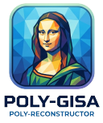

Upload any image and watch as the algorithm reconstructs it using overlapping semi-transparent polygons. Use the preferences below to fine-tune the generation process in real-time.
The reconstruction employs a simulated annealing process with random mutations to find the optimal position for each polygon.
Waiting for image...